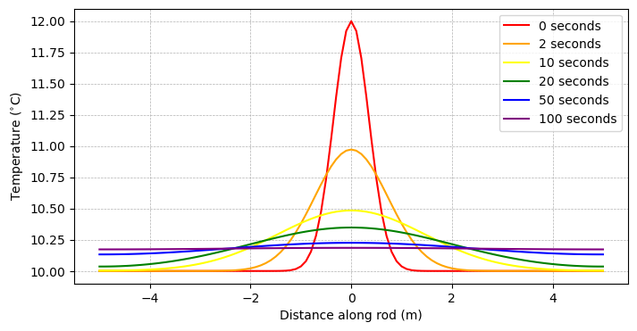
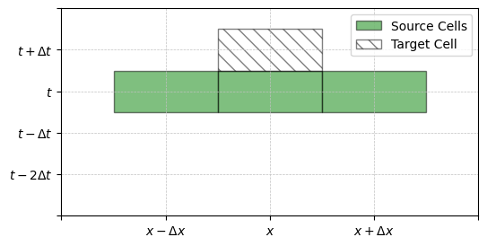
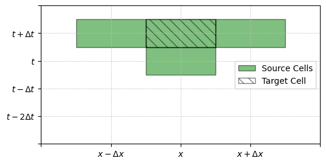

Time Stepping Schemes for PDEs#
In the previous notebook, we examined a solution to the 1D heat equation using a forward Euler method. Here, we will investigate other solutions to this equation using the methods introduced in the notebook for ODEs.
Import the modules for this notebook
import os
import numpy as np
import matplotlib.pyplot as plt
from matplotlib.patches import Rectangle
Model Example#
As described in the previous notebook, the 1D heat equation describing a temperature in a rod is given by
As in the previous notebook, we’ll construct the initial conditions as a gaussian distribution with a peak at the center of the rod.
# define a 10 m grid between -5 and 5
x_min = -5.0
x_max = 5.0
# define a spatial step
dx = 0.1
# compute the number of points on the x grid
nx = int((x_max-x_min)/dx) + 1
# define the x grid
x = np.linspace(x_min, x_max, nx)
# estimate initial conditions
T_0 = 2*np.exp(-(x**2)/0.25) + 10
# starting and ending times (seconds)
t_min = 0.0
t_max = 100.0
# define kappa
kappa = 0.1
Analytical Solution#
Since we’re going to plottting comparisons several times, let’s make a quick plotting function:
def plot_the_temperature_at_different_timesteps(x, dt, T):
fig = plt.figure(figsize=(8,4))
# plot initial conditions
plt.plot(x, T[0,:], 'r-', label='0 seconds')
# plot conditions at 2 seconds
time_index = int(2/dt)
plt.plot(x, T[time_index,:], '-', color='orange', label='2 seconds')
# plot conditions at 10 seconds
time_index = int(10/dt)
plt.plot(x, T[time_index,:], '-', color='yellow', label='10 seconds')
# plot conditions at 20 seconds
time_index = int(20/dt)
plt.plot(x, T[time_index,:], '-', color='green', label='20 seconds')
# plot conditions at 10 seconds
time_index = int(50/dt)
plt.plot(x, T[time_index,:], '-', color='blue', label='50 seconds')
# plot conditions at 20 seconds
time_index = int(100/dt)
plt.plot(x, T[time_index,:], '-', color='purple', label='100 seconds')
# format axes
plt.legend()
plt.ylabel('Temperature ($^{\circ}$C)')
plt.xlabel('Distance along rod (m)')
plt.grid(linestyle='--',linewidth=0.5)
plt.show()
Numerical Solutions#
To formulate a numerical solution to the heat equation, we discretize the second-order spatial derivative as
Then, just as for the ODE examples we looked at, we will formulate the time stepping schemes to determine the next temperature profile in the rod as
The function \(f\) will depend on the spatial discretizartion of temperature in the rod at one or more time steps.
Euler Methods#
Forward Euler#
In the Forward Euler method, we express the temperature of the rod at a time \(\Delta t\) in the future as a function of the temperature at the time \(t\) and the rate of change at the time \(t\):
Using our spatial discretization derived above, we can express our scheme as:
We saw this solution in the previous notebook but we can code it up here:
def forward_euler(dt, t_min, t_max, kappa):
# compute number of timesteps
nt = int((t_max-t_min)/dt) + 1 #number of points on t grid
# make a grid to store the solution
T = np.zeros((nt, nx))
# establish initial conditions
T[0, :] = T_0
# loop through each time step up until the last one
for j in range(nt-1):
# loop through each space step to update the temperature
# dont include the boundaries
for i in range(1,len(x)-1):
T[j+1,i] = T[j,i] + dt*kappa * (T[j,i-1] - 2*T[j,i] + T[j,i+1] )/(dx**2)
# now, address the boundary conditions
T[j+1, 0] = T[j+1,1]
T[j+1, -1] = T[j+1,-2]
return(T)
Let’s check out the solution:
dt = 0.050
T = forward_euler(dt, t_min, t_max, kappa)
plot_the_temperature_at_different_timesteps(x, dt, T)

Looks good! Not suprising since we already had this solution.
Forward Euler CFL Condition#
The CFL condition for the Forward Euler condition is:
Numerical Stencil for Forward Euler#
One way that we can visualize a numerical scheme for a PDE is by assessing it’s “stencil” i.e. where in time and space information is being used for a prediction. We can visualize the stencil for the Forward Euler method with the following plotting routing.
plt.figure(figsize=(6,3))
ax = plt.gca()
# make axis lines
for row in range(1,5):
plt.plot([0,5],[row,row], '--', color='silver', linewidth=0.5)
for col in range(1,5):
plt.plot([col,col], [0,5], '--', color='silver', linewidth=0.5)
# patches indicate where in the grid the scheme is operating
ax.add_patch(Rectangle((0.5,2.5),1,1, facecolor='green', edgecolor='k', alpha=0.5))
ax.add_patch(Rectangle((1.5,2.5),1,1, facecolor='green', edgecolor='k', alpha=0.5))
ax.add_patch(Rectangle((2.5,2.5),1,1, facecolor='green', edgecolor='k', alpha=0.5,
label='Source Cells'))
ax.add_patch(Rectangle((1.5,3.5),1,1, facecolor='none', edgecolor='k', alpha=0.5,
hatch='\\\\', label='Target Cell'))
# add ticks
plt.xticks(np.arange(5), ['','$x-\Delta x$','$x$','$x+\Delta x$',''])
plt.yticks(np.arange(6), ['','$t-2\Delta t$','$t-\Delta t$','$t$','$t+\Delta t$',''])
plt.xlim([0,4])
plt.ylim([0,5])
# add a legend
plt.legend()
plt.show()

Here, we see that the information at location \(x\) and time \(t+\Delta t\) is being predicted with information at time \(t\) at locations \(x-\Delta x\), \(x\), and \(x+\Delta x\).
Backward Euler#
In the Backward Euler method, we express the temperature of the rod at a time \(\Delta t\) in the future as a function of the temperature at the time \(t\) and the rate of change at the time \(t+\Delta t\) i.e. in the future.
Similar to the forward method, we can construct a time stepping scheme as follows:
Again, this is an example of an implicit scheme, but the solution isn’t as straight-forward as for the ODE example earlier. Now, we have THREE bits of information for the future that we need for our solution.
# Solution here
Backward Euler Numerical Stencil#
plt.figure(figsize=(6,3))
ax = plt.gca()
# make axis lines
for row in range(1,5):
plt.plot([0,5],[row,row], '--', color='silver', linewidth=0.5)
for col in range(1,5):
plt.plot([col,col], [0,5], '--', color='silver', linewidth=0.5)
# patches indicate where in the grid the scheme is operating
ax.add_patch(Rectangle((0.5,3.5),1,1, facecolor='green', edgecolor='k', alpha=0.5))
ax.add_patch(Rectangle((1.5,2.5),1,1, facecolor='green', edgecolor='k', alpha=0.5))
ax.add_patch(Rectangle((1.5,3.5),1,1, facecolor='green', edgecolor='k', alpha=0.5))
ax.add_patch(Rectangle((2.5,3.5),1,1, facecolor='green', edgecolor='k', alpha=0.5,
label='Source Cells'))
ax.add_patch(Rectangle((1.5,3.5),1,1, facecolor='none', edgecolor='k', alpha=0.5,
hatch='\\\\', label='Target Cell'))
# add ticks
plt.xticks(np.arange(5), ['','$x-\Delta x$','$x$','$x+\Delta x$',''])
plt.yticks(np.arange(6), ['','$t-2\Delta t$','$t-\Delta t$','$t$','$t+\Delta t$',''])
plt.xlim([0,4])
plt.ylim([0,5])
# add a legend
plt.legend()
plt.show()

In the implicit scheme, the information at location \(x\) and time \(t+\Delta t\) is being predicted with information at time \(t+\Delta t\) at locations \(x-\Delta x\), \(x\) (itself!!!), and \(x+\Delta x\), along with the information at time \(t\) and location \(x\).
Crank-Nicolson Scheme#
In the Crank-Nicolson scheme, we express the temperature of the rod at a time \(\Delta t\) in the future as a function of the temperature at the time \(t\) and a combination of the rates of change at the time \(t\) and the time time \(t+\Delta t\). Specifically, the combination is done as an average of the two:
This method can be thought of as a combination of the explicit and implicit Euler methods.
Crank-Nicolson Numerical Stencil#
plt.figure(figsize=(6,3))
ax = plt.gca()
# make axis lines
for row in range(1,5):
plt.plot([0,5],[row,row], '--', color='silver', linewidth=0.5)
for col in range(1,5):
plt.plot([col,col], [0,5], '--', color='silver', linewidth=0.5)
# patches indicate where in the grid the scheme is operating
ax.add_patch(Rectangle((0.5,3.5),1,1, facecolor='green', edgecolor='k', alpha=0.5))
ax.add_patch(Rectangle((1.5,2.5),1,1, facecolor='green', edgecolor='k', alpha=0.5))
ax.add_patch(Rectangle((1.5,3.5),1,1, facecolor='green', edgecolor='k', alpha=0.5))
ax.add_patch(Rectangle((2.5,3.5),1,1, facecolor='green', edgecolor='k', alpha=0.5,
label='Source Cells'))
ax.add_patch(Rectangle((1.5,3.5),1,1, facecolor='none', edgecolor='k', alpha=0.5,
hatch='\\\\', label='Target Cell'))
# add ticks
plt.xticks(np.arange(5), ['','$x-\Delta x$','$x$','$x+\Delta x$',''])
plt.yticks(np.arange(6), ['','$t-2\Delta t$','$t-\Delta t$','$t$','$t+\Delta t$',''])
plt.xlim([0,4])
plt.ylim([0,5])
# add a legend
plt.legend()
plt.show()
Adams-Bashforth#
The Adams-Bashforth method are similar to the scenes above but use two time steps in the past. For example, the Adams-Bashforth 2-step method can be represented as follows:
The method can easily be extended to include additional steps for enhanced numerical stability, but at higher numerical costs.
def adams_bashforth_2(dt, t_min, t_max, kappa):
# compute number of timesteps
nt = int((t_max-t_min)/dt) + 1 #number of points on t grid
# make a grid to store the solution
T = np.zeros((nt, nx))
# establish initial conditions
T[0, :] = T_0
# loop through each time step up until the last one
for j in range(nt-1):
if j==0:
# apply forward euler for the first timestep
for i in range(1,len(x)-1):
T[j+1,i] = T[j,i] + dt*kappa * (T[j,i-1] - 2*T[j,i] + T[j,i+1] )/(dx**2)
else:
# apply AB2 for subsequent timesteps
for i in range(1,len(x)-1):
d2T_dx2 = (0.5/(dx**2)) * ( 3*(T[j,i-1] - 2*T[j,i] + T[j,i+1]) - (T[j-1,i-1] - 2*T[j-1,i] + T[j-1,i+1]))
T[j+1,i] = T[j,i] + dt*kappa *d2T_dx2
# now, address the boundary conditions
T[j+1, 0] = T[j+1,1]
T[j+1, -1] = T[j+1,-2]
return(T)
dt = 0.025
T = adams_bashforth_2(dt, t_min, t_max, kappa)
plot_the_temperature_at_different_timesteps(x, dt, T)
Adams Bashforth CFL Condition#
print('delta_t',dt)
print('CFL',3*dx**2/(8*kappa))
delta_t 0.025
CFL 0.037500000000000006